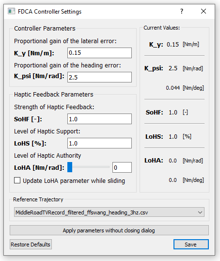

Module: Haptic Controller Manager
The Haptic Controller Manager is a module that was specifically created to make different sorts of controllers for haptic interactions. An example that is included, is the Four Design Choice Architecture (FDCA) controller for haptic feedback on the steering wheel. However,
the main idea behind this module is that user can make their sort of controller for haptic feedback. In this section
we'll explain the usage of the module, which will be strikingly similar to other modules, so if you understand the basic module architecture you should be easily able to expand on this one.
In the image below the Haptic Controller Manager module is shown how it should look like if you open it up in the STOPPED state (without default settings).

Using the Module
Using the Haptic Controller Manager module is very similar to using the Hardware Manager and Carla Interface modules. You can add haptic controllers in the
stopped state and every controller has its settings which you have to set, for the default FDCA controller these are:

We will not go into detail here as to what these parameters mean, however, there is a difference with the previously mentioned similar modules
(Hardware Manager and Carla Interface ). The difference is that you are still able to change the settings of your controllers during the
running and ready states, this is of importance because you want to be able to tune your controllers during operation. As we show in the GIF below
we can tweak the settings during operation (click on the gif for a full-sized version):
This is the main difference from the other modules, of course, you can take the FDCA controller as a template to make your own awesome controllers! :)
Adding to the Module
As said in the introduction adding to this module is quite similar to the other modules so please for a bit of a grasp refer to adding your own agent.